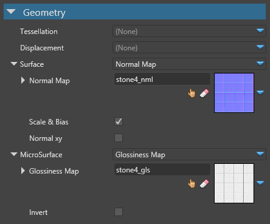
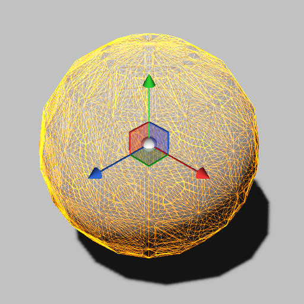
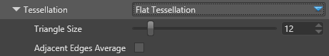

Geometry attributes
Warning
Приносим свои извинения за неудобства. Для этой страницы нет перевода на русский язык. Она будет отображаться на английском языке.
Intermediate Artist Programmer
The material geometry attributes define the shape of a material.

Tessellation
Real-time tessellation uses a HW feature of the GPU to massively subdivide triangles. This increases the realism and potential of deformations of the surface geometry.
You can choose none, flat tessellation, or point normal tessellation.
| No tessellation | Flat tessellation | Point normal tessellation |
|---|---|---|
|  |  |
Flat tessellation
This option tessellates the mesh uniformly.

In the images below, notice how the flat tessellation adds extra triangles, but doesn't take the curve into account:
| No tessellation | Flat tessellation |
|---|---|
| Property | Description |
|---|---|
| Triangle size | The size of a tessellated triangle in screen-space units |
| Adjacent edges average | Adjust the triangle size values from the average of adjacent edges values |
Point normal tessellation
This option tessellates the mesh using the curvature provided by the mesh normals.
The images below show how point normal tessellation adds extra triangles while taking the curvature of the mesh into account:
| No tessellation | Point normal tessellation |
|---|---|
| Property | Description |
|---|---|
| Triangle size | The size of a tessellated triangle in screen-space units |
| Adjacent edge average | Adjust the triangle size and normal curvature values from the average of adjacent edge values |
Displacement
Under the Displacement properties, you can specify displacement map. This displaces the geometry of the mesh.

Depending on the stage at which the displacement is applied, the results can be very different:
| Displacement with vertex shader | Tessellation with displacement |
|---|---|
 |
| Property | Description |
|---|---|
| Displacement Map | The displacement texture as a material color provider |
| Intensity | The amount of displacement |
| Scale & Bias | When enabled, the value coming from the texture is considered a positive value ranging from 0.0 to 1.0 and the shader applies a scale to get the range -1.0 to 1.0 |
| Shader Stage | Specify which shader stage the displacement map should be applied to: vertex shader or domain shader (used with tessellation) |
Surface
Under the Surface properties, you can define a Normal maps to define macro surface normals. The normal map provides per-pixel normal perturbation of the normal of the mesh. Normal maps create the appearance of bumps and indents in the mesh:
| Flat | Using a normal map |
|---|---|
 |
 |
| Property | Description |
|---|---|
| Normal map | The normal map color provider |
| Scale and offset | Interpret values from the texture as positive values ranging from 0.0 to 1.0. The shader applies a scale to get the range -1.0 to 1.0. |
| Reconstruct Z | If there's no Z component in the texture, reconstruct it from the X and Y components. This assumes that X2 + Y2 + Z2 = 1 and that Z is always positive, so no normal vector can point to the back side of the surface. We recommend you enable this option, as Stride might remove the Z component when you compress normal maps. |
For more information about normal maps, see the normal maps page.
Micro surface
Under the Micro surface setting, you can provide a gloss map to provide per-pixel information for gloss.
If you select Float:
- a value of
1.0means the surface is highly glossy (the coarse normal isn't perturbed) - a value of
0.0means the surface is very rough (the coarse normal is highly perturbed in several directions)
The screenshots below show different levels of gloss on a material:
- Diffuse = #848484, Lambert
- Specular Metalness = 1.0, GGX
| Gloss = 0.0 | 0.25 | 0.5 | 0.8 | 1.0 |
|---|---|---|---|---|
 |
 |
 |
 |
 |
| Property | Description |
|---|---|
| Gloss map | The gloss map color provider |
| Invert | Inverts the gloss value (eg a value of 1.0 produces zero gloss instead of maximum). This effectively turns the gloss value into a roughness value, as used in other game engines |
If you have local reflections enabled, the scene is reflected in materials with a gloss map value higher than the threshold you specify in the local reflections properties. For more information, see Local reflections.